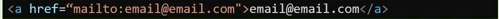

Sintaxe:

É uma referência dentro de um documento em hipertexto para partes do mesmo documento, outros documentos, arquivos ou endereço eletronico.
Já os links podem ser remotos, internos, locais, com endereço de correio ou arquivos.
A marcação de hiperlinks acontece utilizando a tag "< a>" e a propriedade href que faz a referência para o conteúdo desejado.
Sintaxe:
São links que referenciam páginas ou sites da web. Na propriedade href utilizamos a URL (Uniform Resource Locator) para a referência que desejamos.
Sintaxe:

São links que apontam a um lugar diferente dentro da mesma página e possibilita acessar diferentes parágrafos ou seções quando o documento é extenso.
Sintaxe:
São links que apontam para outras páginas dentro de um mesmo site.
Sintaxe:
É possível realizar hiperlinks imagens envolvendo a tag de imagem com a tag de hiperlink.
Sintaxe:

São links que apontam para arquivos e possibilitam realizar download deste arquivo.
Sintaxe:

São links que apontam para um endereço eletrônico.
Sintaxe:
